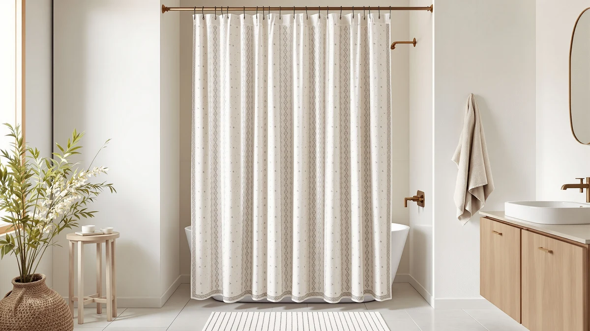

Siiluminisoy Boho Shower Curtain Review (2026): Worth It?
Prices and picks verified as of November 2026. Independent, reader-supported reviews.


Quick Answer
The Siiluminisoy Extra Long Boho Shower curtain is a $23.79 Polyester and PEVA blend boho-print curtain sized 72 inches by 84 inches, twelve inches longer than a standard cut. Against N&Y HOME's Waffle Weave Shower curtain at $23.99 and two budget picks from Colorful Star and Dynamene at $22.99 each, the extra length and print are what set it apart, since none of the four listings currently carry a published star rating or review count to compare.
Our pick: Siiluminisoy Extra Long Boho Shower, $23.79 Check Price on Amazon
Bottom line: our top pick is the Siiluminisoy Extra Long Boho Shower Curtain at $23.79.
Things to Know Before You Buy
- The Siiluminisoy Extra Long Boho Shower curtain costs $23.79, the second-highest price of the four curtains covered in this siiluminisoy boho shower curtain review.
- It ships in an extra-long 72-inch by 84-inch size (Pack of 1), twelve inches longer than the standard 72-by-72 cut most shower curtains use.
- It's a Polyester and PEVA blend that pairs a woven, bohemian-print face with a water-resistant PEVA layer.
- N&Y HOME's Waffle Weave Shower curtain runs $23.99, and Colorful Star's No Hook Shower and Dynamene's Waffle Shower Curtain 256 both cost $22.99, all within a dollar of the Siiluminisoy pick.
- None of the four curtains compared here currently carry a published star rating or review count, so this review relies on size, material and pricing rather than a review track record.
This Siiluminisoy boho shower curtain review compares the $23.79 Extra Long Boho Shower curtain's size, fabric and price against three similar curtains to see whether its extra-long cut and bohemian print earn the extra cost. The curtain is a Polyester and PEVA blend that ships in a 72-inch by 84-inch size (Pack of 1), twelve inches longer than the 72-by-72 cut most shower curtains use.
We compared it against N&Y HOME's Waffle Weave Shower curtain at $23.99, Colorful Star's No Hook Shower at $22.99, and Dynamene's Waffle Shower Curtain 256, also $22.99. None of the four listings currently carry a published star rating or review count, so the comparison below focuses on size, fabric and price rather than a proven review history. Shoppers with a taller shower stall or a raised rod get the most out of the Siiluminisoy pick's extra length, while anyone with a standard 72-by-72 opening might find one of the three cheaper alternatives a better fit.
Why You Should Trust Us
Best Shower Curtains reviews bathroom products by comparing manufacturer specs, current pricing and available owner feedback pulled from the retailers that sell them, rather than running a private testing lab. Ilane Tall, our home and bath editor, researched the Siiluminisoy Extra Long Boho Shower curtain against N&Y HOME, Colorful Star and Dynamene, checking size claims, material and price parity before writing this siiluminisoy boho shower curtain review. We revisit prices and availability on a regular schedule and note clearly when a listing hasn't built up a public review record we can check claims against. These four curtains sit within a dollar of each other, so the comparison comes down to size, fabric and print rather than price alone. When a listing lacks review history to lean on, we say so directly instead of implying a track record that isn't there yet.
Our Research Experience
We do not run a physical testing lab, and we have not hung the Siiluminisoy Extra Long Boho Shower curtain in a bathroom ourselves. Our process instead compares published specs, material composition and pricing against the shower curtains we already cover, then checks that against what verified owners report about fit, drape and durability on comparable listings elsewhere. For this pick specifically, that meant lining up its Polyester and PEVA blend and 72-by-84-inch cut against N&Y HOME's waffle-weave curtain, Colorful Star's no-hook design and Dynamene's waffle curtain, since none of the four currently carry a public star rating we can weigh against each other. We flag it clearly when a claim can't be checked against real owner feedback, such as long-term durability on a newer listing, rather than guess at an answer this siiluminisoy boho shower curtain review can't support.
Overview & Specs

Siiluminisoy Extra Long Boho Shower
What we like
- 72-by-84-inch cut is twelve inches longer than the standard 72-by-72 size most curtains use
- Polyester and PEVA blend resists water without needing a separate liner
- Bohemian print offers a distinct look next to the waffle-weave and plain alternatives in this comparison
Flaws but not dealbreakers
- Costs eighty cents more than both Colorful Star and Dynamene
- No published star rating or review count yet, so buyers can't lean on a track record
- The extra-long size is more curtain than a standard 72-by-72 shower opening needs
| Material | Polyester / PEVA |
| Size | 72"W x 84"L (Pack of 1) |
The Siiluminisoy Extra Long Boho Shower curtain ships in a 72-inch by 84-inch size (Pack of 1), twelve inches longer than the standard 72-by-72 cut most shower curtains use. That extra length matters for a shower stall with a raised rod or a taller ceiling, where a standard-size curtain would leave a visible gap near the floor. The fabric is a Polyester and PEVA blend, pairing a woven polyester face printed with a bohemian pattern against a water-resistant PEVA layer, a construction that lets the curtain resist water without a separate liner underneath.
At $23.79, it costs twenty cents less than N&Y HOME's Waffle Weave Shower curtain but eighty cents more than both Colorful Star's No Hook Shower and Dynamene's Waffle Shower Curtain 256. None of the four listings currently show a public star rating or review count, so the price gap here comes down to an extra-long size and a bohemian print rather than a proven track record. Polyester and PEVA blends like this one are a common construction choice for shower curtains that need to resist water without a separate liner, though the 72-by-84-inch size means a standard shower opening ends up with extra fabric pooling at the tub rather than hanging flush.
What We Liked
The extra-long size is the clearest reason to consider the Siiluminisoy Extra Long Boho Shower curtain. At 72 inches by 84 inches, it runs twelve inches longer than a standard 72-by-72 curtain, which matters for a shower stall with a raised rod or a taller ceiling where a standard cut leaves a gap near the floor. The Polyester and PEVA blend is also worth calling out: it pairs a woven, bohemian-print face with a water-resistant layer, so the curtain works without a separate liner underneath. Compared with N&Y HOME's Waffle Weave Shower curtain and the two budget picks from Colorful Star and Dynamene, Siiluminisoy is the only option here built around that extra length and a distinct boho print, which matters most if a standard-size curtain has left your tub exposed before.
What Could Be Better
The price is the drawback that stands out most in this siiluminisoy boho shower curtain review. At $23.79, it costs eighty cents more than both Colorful Star and Dynamene, even though it undercuts N&Y HOME by twenty cents. The extra-long cut is also a tradeoff rather than a pure upgrade: a standard 72-by-72 shower opening ends up with more fabric pooling at the tub than a correctly sized curtain would, so the added length only pays off in a taller stall. And because none of the four listings currently carry a published star rating or review count, there isn't yet a documented track record to check the fabric or sizing claims against, so buyers are weighing specs and price rather than verified owner feedback.
Who Is It For?
This Siiluminisoy boho shower curtain suits a bathroom with a raised rod or a taller shower stall, where a standard 72-by-72 curtain would leave a visible gap near the floor. It's a reasonable pick if a bohemian print fits your bathroom's style better than the waffle-weave texture on N&Y HOME's curtain or the simpler patterns on the two budget picks. You also benefit from the Polyester and PEVA blend if you want a curtain that skips a separate liner, since the PEVA layer handles water resistance on its own. Skip it if your shower opening is a standard 72 inches tall, since the extra length offers no benefit there and simply pools at the tub, or if price matters more than print, since Colorful Star and Dynamene both undercut it by eighty cents. Anyone comparing all four listings side by side should weigh size and style first, since none of the four have a review history to lean on yet.
Alternatives to Consider
If the Siiluminisoy curtain's price or extra-long size doesn't fit your bathroom, these three picks round out the comparison: a waffle-weave premium option and two budget-friendly alternatives, all priced at or under $23.99.

Premium Choice
N&Y HOME Waffle Weave Shower
N&Y HOME's Waffle Weave Shower curtain runs $23.99, twenty cents more than the Siiluminisoy boho pick, and trades the extra-long size and bohemian print for a textured waffle weave if that look fits your bathroom better.
$23.99
Check Price on Amazon
Best Value
Colorful Star No Hook Shower
Colorful Star's No Hook Shower curtain costs $22.99, eighty cents less than the Siiluminisoy pick, and swaps the extra-long size for a standard, hookless design if a simpler setup matters more to you than added length.
$22.99
Check Price on Amazon
Best Value
Dynamene Waffle Shower Curtain 256
Dynamene's Waffle Shower Curtain 256 matches Colorful Star at $22.99 and offers a waffle-weave texture as a third option if you want added texture without paying extra for the Siiluminisoy curtain's bohemian print.
$22.99
Check Price on AmazonWhat size is the Siiluminisoy Extra Long Boho Shower curtain?
It ships in a 72-inch by 84-inch size (Pack of 1), twelve inches longer than the standard 72-by-72 cut most shower curtains use.
What material is the Siiluminisoy boho shower curtain made from?
The spec sheet lists a Polyester and PEVA blend.
Frequently Asked Questions
What size is the Siiluminisoy Extra Long Boho Shower curtain?
It ships in a 72-inch by 84-inch size (Pack of 1), twelve inches longer than the standard 72-by-72 cut most shower curtains use. None of the three alternatives compared in this review list an extra-long cut, so Siiluminisoy is the only option here built for a taller shower stall or a raised rod.
What material is the Siiluminisoy boho shower curtain made from?
The spec sheet lists a Polyester and PEVA blend. That pairs a woven, bohemian-print polyester face with a water-resistant PEVA layer, a common construction for printed shower curtains that need to resist water without a separate liner.
Is the Siiluminisoy boho shower curtain worth it compared to N&Y HOME, Colorful Star and Dynamene?
At $23.79, it costs twenty cents less than N&Y HOME's Waffle Weave Shower curtain and eighty cents more than both Colorful Star's No Hook Shower and Dynamene's Waffle Shower Curtain 256. None of the four currently show a public star rating, so the choice comes down to the extra-long size and boho print rather than a proven review history.
Final Verdict
This siiluminisoy boho shower curtain review comes down to size and print versus price. The Siiluminisoy Extra Long Boho Shower curtain costs $23.79, twenty cents less than N&Y HOME but eighty cents more than Colorful Star and Dynamene, and it delivers an extra-long 72-by-84-inch cut with a Polyester and PEVA blend and a bohemian print the other three don't match. None of the four currently carry a published star rating to lean on. For a bathroom with a raised rod or a taller shower stall, the Siiluminisoy pick is the one worth the extra cost. Shoppers with a standard 72-by-72 opening or a tighter budget should compare N&Y HOME, Colorful Star or Dynamene before deciding.